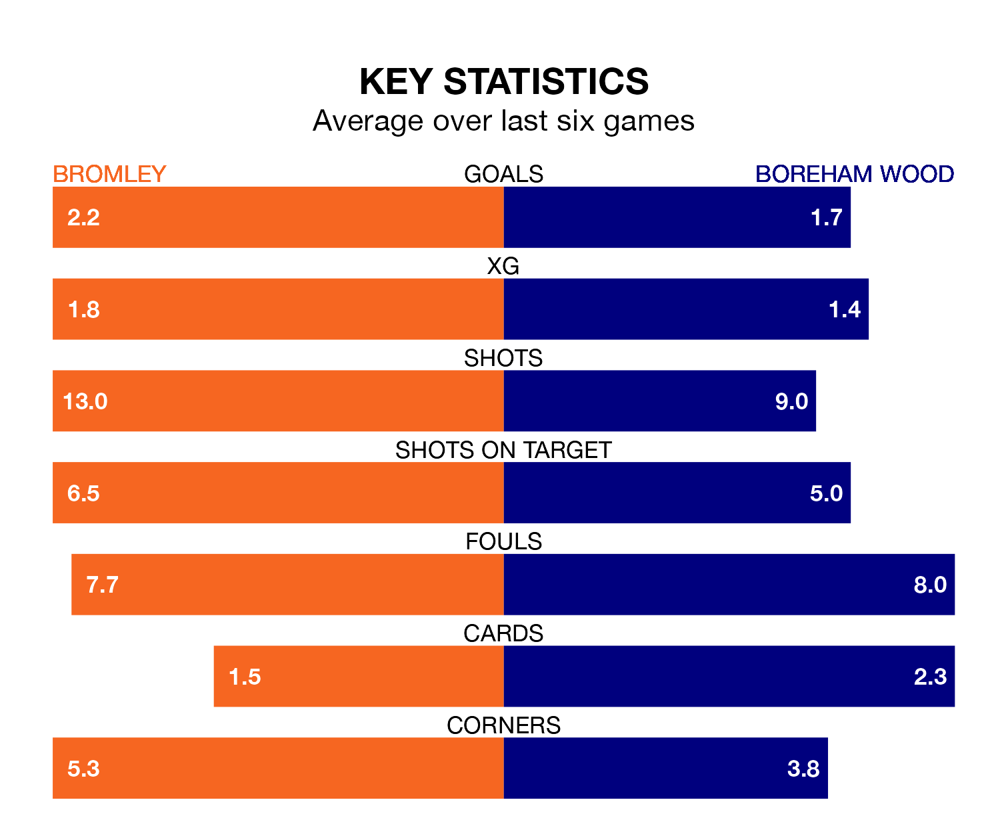

Bromley are heavy favourites to keep all three points at home in Saturday's kick-off against Boreham Wood.
The Ravens, who sit second in National League with 28 games played, are priced at 1.6 to seal victory at Hayes Lane.
Sitting 13 places and 24 points behind them in the table, Boreham Wood are 4.3 to win with *Betting Company*, while the draw is at 3.7.
With 33 goals in 27 games so far this season, Boreham Wood are scoring at below the league average rate with 1.2 goals per game. And they are conceding more than average, letting in 42 goals at a rate of 1.6 per game.
Bromley, meanwhile, are above average scorers, with 1.8 goals per game, compared to a league average of 1.5. They have conceded 1.0 goal per game.
In the last 10 years, Bromley and Boreham Wood have played each other on 19 occasions. Bromley won seven of them, Boreham Wood five, and they drew seven times.
On average, the Ravens scored 1.3 goals and the Wood 1.3 in those matches.
Their last meeting was on November 11, when they played out a 1-1 draw.
The Ravens are in good form in National League, with four wins and two draws from their last six games.
With three wins and two draws over that period, the Wood's form is worse – they have taken 11 points from 18, compared to the home side's 14.
Bromley's last match was on January 6, a 0-0 draw against Maidenhead United.
Boreham Wood drew 1-1 with York City last time out, on January 7, with Christopher Miles Bush on the scoresheet.
Updated: 06:13 (UTC), 18/01/24